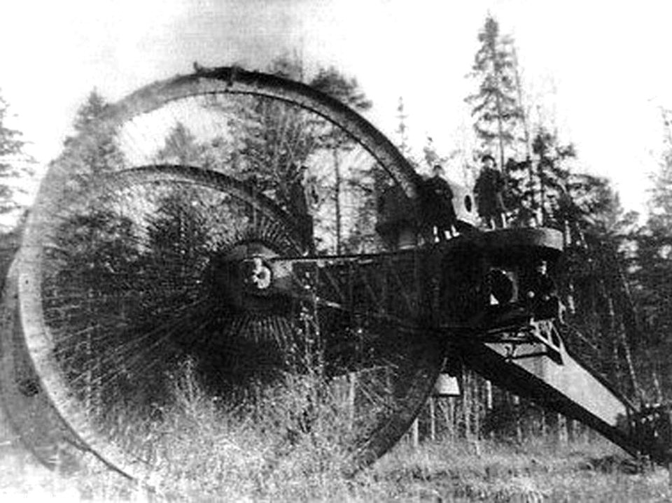
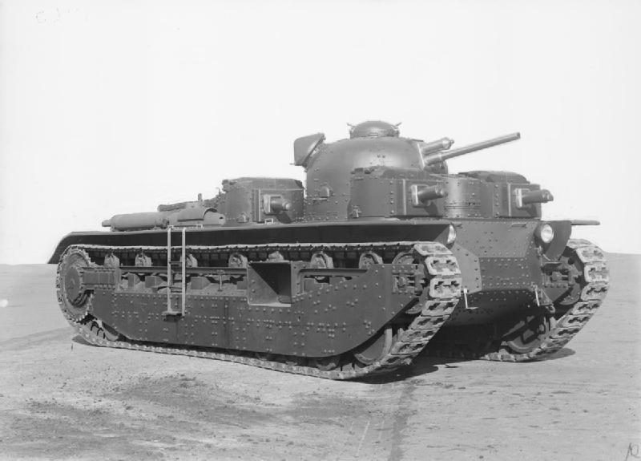
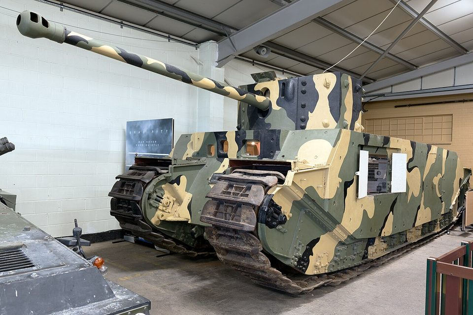
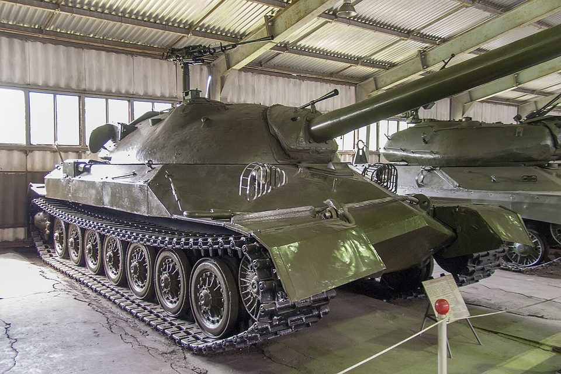
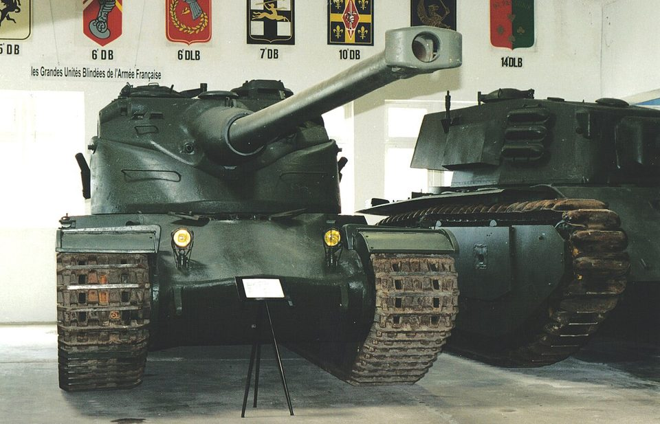
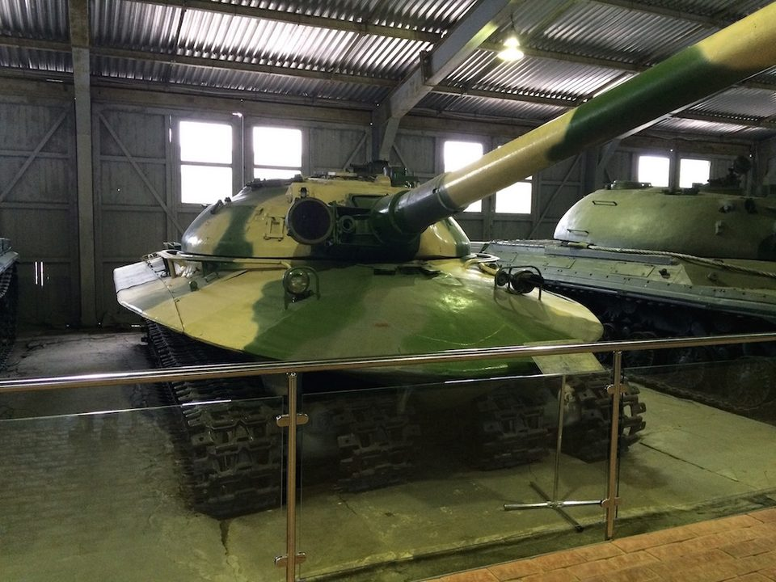
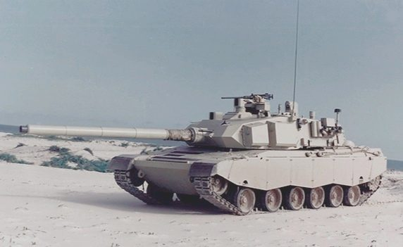

Prototipos y tanques raros
Carros que se construyeron en muy pocas unidades y nunca llegaron a fabricarse en serie: superpesados, ideas experimentales y proyectos cancelados. Muchos influyeron en los carros que vinieron después.
Primera Guerra Mundial
1916–1918 · 4 fichas-

Rusia · 1915Tanque del Zar
Prototipo de vehículo de asalto
-
 Italia · 1918
Italia · 1918Fiat 2000
Carro pesado
-
 Alemania · 1918
Alemania · 1918LK II / Stridsvagn m/21
Carro ligero
-
 Reino Unido · 1918
Reino Unido · 1918Mark IX
Transporte blindado de tropas
Entreguerras
1919–1939 · 7 fichas-

Reino Unido · 1926Vickers A1E1 Independent
Prototipo de carro pesado
-
 Estados Unidos · 1931
Estados Unidos · 1931Christie M1931
Carro rápido experimental
-
 Alemania · 1934
Alemania · 1934Neubaufahrzeug
Prototipo de carro pesado
-
 Japón · 1934
Japón · 1934Type 95 Ro-Go
Carro pesado de varias torretas
-
 Unión Soviética · 1939
Unión Soviética · 1939SMK
Prototipo de carro pesado
-
 Unión Soviética · 1939
Unión Soviética · 1939T-100
Prototipo de carro pesado
-
 España · 1939
España · 1939Verdeja
Prototipo de carro ligero
Segunda Guerra Mundial
1939–1945 · 7 fichas-
 Nueva Zelanda · 1941
Nueva Zelanda · 1941Bob Semple
Carro improvisado
-

Reino Unido · 1941TOG II
Prototipo de carro pesado
-
 Alemania · 1944
Alemania · 1944Panzer VIII Maus
Prototipo de carro superpesado
-
 Alemania · 1945
Alemania · 1945Kugelpanzer
Vehículo experimental
-
 Alemania · 1945
Alemania · 1945Panzerkampfwagen E-100
Prototipo de carro superpesado
-
 Estados Unidos · 1945
Estados Unidos · 1945T28
Prototipo de carro superpesado
-
 Reino Unido · 1945
Reino Unido · 1945Tortoise
Prototipo de carro de asalto pesado
Guerra Fría
1946–1991 · 10 fichas-

Unión Soviética · 1948IS-7
Prototipo de carro pesado
-

Francia · 1949AMX-50
Prototipo de carro pesado
-
 Reino Unido · 1955
Reino Unido · 1955FV4005
Prototipo de cazacarros pesado
-
 Estados Unidos · 1955
Estados Unidos · 1955T95
Prototipo de carro medio
-

Unión Soviética · 1959Objeto 279
Prototipo de carro pesado
-
 Unión Soviética · 1964
Unión Soviética · 1964Objeto 775
Prototipo de carro de misiles
-
 Estados Unidos · 1967
Estados Unidos · 1967MBT-70
Prototipo de carro de combate principal
-
 Francia · 1983
Francia · 1983AMX-40
Prototipo de carro de combate principal
-

Brasil · 1986EE-T1 Osório
Prototipo de carro de combate principal
-
 Estados Unidos · 1995
Estados Unidos · 1995M8 AGS
Prototipo de carro ligero